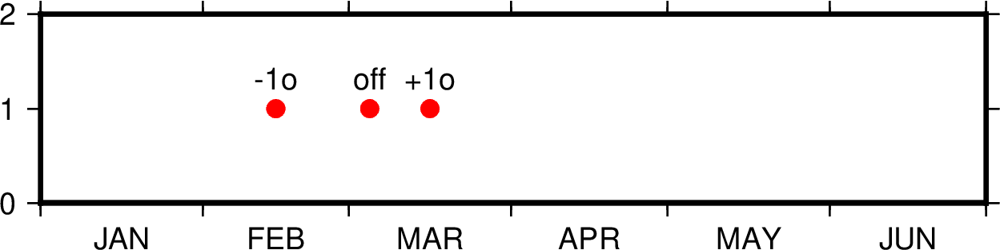

TIME參數¶
本節列出所有時間相關參數，參數的默認值在中括號內列出。
- TIME_EPOCH
指定所有相對時間的參考時刻 [1970-01-01T00:00:00]
其格式爲
yyyy-mm-ddT[hh:mm:ss]或yyyy-Www-ddTT[hh:mm:ss]- TIME_UNIT
指定相對時間數據相對於參考時間的單位 [s]
可以取：
- y：年；假定一年365.2425天；
- o：月；假定所有月是等長的；
- d：天；
- h：時；
- m：分鐘；
- s：秒；
- TIME_SYSTEM
TIME_EPOCH和TIME_UNIT的合併版即指定
TIME_SYSTEM相當於同時指定了TIME_EPOCH和TIME_UNIT。可取如下值：JD：等效於-4713-11-25T12:00:00 dMJD：等效於1858-11-17T00:00:00 dJ2000：等效於2000-01-01T12:00:00 dS1985：等效於1985-01-01T00:00:00 sUNIX： 等效於1970-01-01T00:00:00 sRD0001：等效於0001-01-01T00:00:00 sRATA：等效於0000-12-31T00:00:00 d
該參數並不存在於
gmt.conf中，當指定該參數時，其會被自動轉換爲TIME_EPOCH和TIME_UNIT對應的值。- TIME_WEEK_START
- 指定周幾是一週的第一天，可取值爲Monday或Sunday [Monday]
- TIME_Y2K_OFFSET_YEAR
當用兩位數字表示四位數字的年份時，TIME_Y2K_OFFSET_YEAR給定了100年序列的第一年 [1950]
比如，若TIME_Y2K_OFFSET_YEAR=1729，則數字29到99分別表示1729到1799，而數字00 到28則表示1800到1828。默認值爲1950，即00到99表示的年份範圍爲1950到2049。
- TIME_REPORT
控制GMT運行進度報告中是否顯示時間戳 [
none]可以取三個值：
none不顯示時間戳clock顯示絕對時間elapsed顯示自會話開始所經歷的時間
- TIME_IS_INTERVAL
控制輸入的日期時間數據截斷和微調 [
off]其可以取如下三類值：
off：即不對輸入數據做任何截斷和調整+<n><u>：<n>爲某個整數，<u>爲某個時間單位。其表示將輸入的日期時間數據截斷爲<n><u>的整數倍，並將其放在緊接着的時間間隔的中間-<n><u>：同樣，但將該輸入數據放在前一個時間間隔的中間
時間間隔單位
<u>可以取如下值：y年o月u周h小時m分鐘s秒
下面的示例在時間座標系下繪製了三個紅點，每個紅點的輸入數據都是:
1997-03-05 1
圖中展示了
TIME_IS_INTERVAL取不同值時的效果：off：1997-03-05解釋爲1997-03-05T00:00:00.00.0+1o：1997-03-05解釋爲1997-03-15T12:00:00.0-1o：1997-03-05解釋爲1997-02-15T12:00:00.0
- TIME_INTERVAL_FRACTION
確定時間軸開頭和結尾的部分時間間隔是否需要標註 [0.5]
對於時間軸而言，若開頭/結尾部分的時間間隔大於指定的時間間隔的某個比例，則繪製開頭/結尾部分的標註並將標註置於時間間隔的中間。